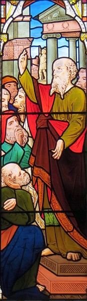

Actes des Apôtres
Chapitre 12, vèrsets 7-16
Et y'eut eune lueu êgaluante dans l'aître et un m'sagi du Seigneu géthit et rêvilyit Pièrre en l'êlouochant. I' lî dit, "Lève-té dêliêment!", et d'un co i' fut d'senhalaûdé. Épis lé m'sagi dit, "Grée-té et caûche-té!" Et v'là tch'i' fit. Et i' lî dit, "Enfliube-té dans ta clioque et vé-t-en acanté mé!" Et i' sortit souotre li, sans saver si chein qu'lé m'sagi fit 'tait la véthité, mais criyant pus à co qu'i' rêvait. Auprès aver pâssé l'preunmié gardgien épis l'deuxième, il' avîndrent à l'us d'fé tchi s'adonnait à la ville. L'us s'ouvrit d'san gré et i' lus dêhalîdrent et lus arroutîdrent avaû eune rue, et là-d'ssus lé m'sagi l'laîssit. Pièrre èrvînt à sé et dit, "Véthe, j'sis seux achteu qu'lé Seigneu m'avait env'yé chu m'sagi à seule fîn dé m's'couothi du pouvé d'Hérode et d'tout chein qu'les Juis sont à espéther." Coumme i' rêalîsist tout chennechîn, i' s'n allait siez Mathie, la méthe à Jean mênommé Mar, où'est'qu'un fliotchet dg'ieux lus 'taient assembliés pouor prier. I' tapit à l'us et eune hardelle tch'avait nom Rhode vînt ouvri. Ou r'connut la vouaix à Pièrre, et fut si rêjouie qu'au run d'li'ouvri l'us ou r'couothit par dédans pouor dithe qué Pièrre 'tait à l'us. I' lus dîdrent, "Tu niolinne!" Mais oulle însistit qué ch'tait vrai. I' lus dîdrent, "Ch'est san m'sagi!"
Pièrre èrtapit à l'us, et quand nou l'î ouvrit, nou l'vit et nou fut êbézoui.
Chapitre 17, vèrsets 16-31

Quandi qu'Paul 'tait à l's espéther à Athènes, i' 'tait gêné d'vaie tant d'êpitafl'yes dé dgieux partoute la ville. Il ardguait don dans la sŷnnagogue auve les Juis et les gens d'fouai épis châque jour dans l'marchi auve les cheins tchi lus adonnaient là-bas. Y'en avait des cheins des dgaîngues des bords d's Êpitchuthéens et des Stoïques auve tchi il avait du d'bat. Y'en avait tchi dîthaient, "Tch'est qu'i' dit, ch't êpinnotcheux?" Et d'aut's à dithe, "I' pathaît un manniéthe dé prêcheux dé dgieux horsains." Ch'est en tchi i' prêchait entouor "Jésû" et "Résurrection". Nou l'am'nit don au Mont à Mars et lus dit, "Explique-nous bein cliaithement, s'i' t'pliaît, chu nouvel enseignement qu'tu'es à prêchi. Ch't' alibêle nos sembl'ye mal gabouothée, mais j'voudrêmes bein en comprendre les dêfinnissâles." Assa, l's hoummes d'Athènes et hors pays tch'y d'meuthaient pâssaient un tas d'lus temps à distchuter ou êcouter les dreines.
Paul sé d'butit sus l'Mont à Mars et dit, "Hoummes d'Athènes! Ous êtes, m'est avis, divèrsément haitchis des dgieux. Jé m'sis traûlé par 'chîn et j'ai r'gardé chein qu'ou louangiz et j'vis un auté sus tchi y'avait ch't' înscription: Au dgieu qu'nou n'connaît pon. Chein qu'ou louangiz sans l'connaître, ch'est chein qu'j'sis à vos prêchi. Lé Dgieu tchi griyit la tèrre et tout chein tch'est là-d'dans, lé chein tch'est l'Seigneu des cieux et d'la tèrre, né d'meuthe pon dans des templ'yes bâtis par les mains d's hoummes. I' n'a pon à êt' sèrvi par les mains d's hoummes; i' n'en a pon d'bésouain, viyant qu'ch'est li tchi bâle à tous la vie, l'soûffl'ye et toutes choses. D'un sang il a grée toutes les nâtions tchi d'meuthent partout l'monde, lus à tèrmé lus saîsons, et lus à borné lus tèrres, à seule fîn qu'i' chèrchent lé Bouôn Dgieu, foucenotent pouor li et l'trouvent, ouaithe qu'i' sait d'amain pouor touos nous. Ch'est en tchi 'en li j'avons la vie et j'bouogeons et j'soummes', coumme tchiqu's'uns d'vos rînmeurs ont dit: 'j'soummes dé ses êfants'. Si j'soummes don l's êfants du Bouôn Dgieu, jé n'dévthêmes pon craithe qué Dgieu est coumme l'or, ou l'argent, ou la pièrre, tchi peut êt' stchulpté s'lon l'mêtchi d'un houmme. Quandi qu'les gens né l'connaîssaient pon acouo, l'Bouôn Dgieu n'en t'nait pon compte; mais achteu i' c'mande à tous à touos les bords d'changi d'avis, par cause qu'il a tèrmé un jour quand tout l'monde s'sa jugi par un houmme tch'a 'té appouainté par li pouor ch't' affaithe, et pouor en bailli l'asseûthance, i' l'a souôl'vé des morts."
Chapitre 26, vèrset 13
Ch'tait d'vièrs méjeu, vot' Majesté, sus lé c'mîn qué j'vis eune leunmiéthe du ciel, pus cliaithe qué l'solé, tchi lithait tout l'tou d'mé et des cheins tchi viageaient acanté mé.
Viyiz étout: